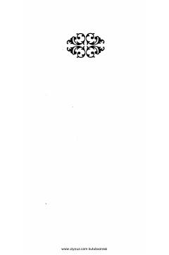

MMJaloliddin Rumiyning ma'naviy-axloqiy hikmatlarga boy mumtoz asari.
Jaloliddin Rumiyning mashhur 'Ma'naviy masnaviy' asarining o'zbek tiliga tarjima qilingan va sharhlangan birinchi jildining birinchi kitobi. Asar tasavvufiy hikmatlar, axloqiy o'gitlar va ilohiy ishq mavzularini o'z ichiga olgan mumtoz adabiyot durdonasidir.